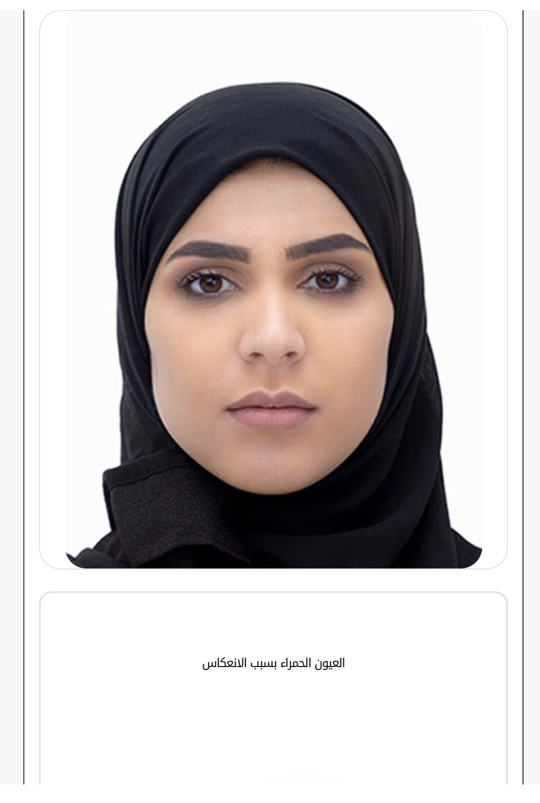

إرشادات التصوير

النساء
- الحجاب مشدود حول الوجه، ويغطي الشعر كاملًا
- الحجاب يغطي الأذنين والرقبة
- الجبهة مكشوفة وغير مغطاة بالحجاب
- الوجه مكشوف كاملًا حتى الذقن، دون نقاب
- دون مساحيق تجميل
- دون نظارات أو عدسات لاصقة
- صورة حديثة ملتقطة خلال آخر 6 أشهر
- ملامح الوجه واضحة، دون تعابير، والفم مغلق
- العينان مفتوحتان، والنظر مستقيم إلى الكاميرا
- الرأس مستقيم دون ميلان أو التفات
- إضاءة متساوية على جانبي الوجه، دون ظل على الوجه أو الخلفية
- دون إضاءة قوية أو عيون حمراء من الفلاش
- صورة ملونة بخلفية بيضاء
- المقاس 4×6 سم، بصيغة JPG أو JPEG
- اليدان خارج الصورة
- دون طيات أو بقع حبر أو ثقوب
الرجال
- ارتداء الغترة أو الشماغ إلزامي
- ألا تغطي الغترة أو الشماغ ملامح الوجه الأساسية
- دون نظارات
- صورة حديثة ملتقطة خلال آخر 6 أشهر
- ملامح الوجه واضحة، دون تعابير، والفم مغلق
- العينان مفتوحتان، والنظر مستقيم إلى الكاميرا
- الرأس مستقيم دون ميلان أو التفات
- إضاءة متساوية على جانبي الوجه، دون ظل على الوجه أو الخلفية
- دون إضاءة قوية أو عيون حمراء من الفلاش
- صورة ملونة بخلفية بيضاء
- المقاس 4×6 سم، بصيغة JPG أو JPEG
- اليدان خارج الصورة
- دون طيات أو بقع حبر أو ثقوب
جاهز لالتقاط صورتك؟
ابدأ التصوير